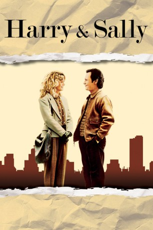

#1962 Harry und Sally
Alternativ: When Harry Met Sally...
Auszeichnungen: für 1 Oscars nominiert 1 BAFTA-Awards gewonnen
 
 IMDB-Wertung: 7.6 / 10
IMDB-Wertung: 7.6 / 10  Metascore: 76
Metascore: 76 
Harry nervt Sally und Sally nervt Harry. Das war während ihrer gemeinsamen unfreiwilligen 18-Stunden-Fahrt nach New York so, und bleibt auch so fünf Jahre später, als sie sich zufällig im Flugzeug treffen. Weitere fünf Jahre später - beide im Beziehungsfrust - tritt das ungleiche Paar mehr aus Not den Gegenbeweis für Harrys Lieblingsthese an: "Männer und Frauen können nie Freunde sein - der Sex kommt ihnen immer in die Quere." Und wie in jeder guten Komödie merken die beiden als allerletzte, dass sie im Grunde füreinander geschaffen sind.
Jahr: 1989
Dauer: 96 Minuten
FSK: 16
Land: USA Studio: Columbia PicturesTonspuren: DTS - ,
Untertitel: Deutsch,
Auflösung: 1080p (1920x1048) Größe: 8130 MB
Genre: Drama, Komödie, Liebe
Regisseur:  Rob Reiner
Rob Reiner
Drehbuch: Nora Ephron
Soundtrack:
Darsteller:
 Billy Crystal als Harry Burns
Billy Crystal als Harry Burns Meg Ryan als Sally Albright
Meg Ryan als Sally Albright Carrie Fisher als Marie
Carrie Fisher als Marie Bruno Kirby als Jess
Bruno Kirby als Jess Steven Ford als Joe
Steven Ford als Joe Lisa Jane Persky als Alice
Lisa Jane Persky als Alice- Michelle Nicastro als Amanda
- Gretchen Palmer als Stewardess
 Robert Alan Beuth als Man on Aisle
Robert Alan Beuth als Man on Aisle Harley Jane Kozak als Helen
Harley Jane Kozak als Helen Tracy Reiner als Emily
Tracy Reiner als Emily Kyle T. Heffner als Gary
Kyle T. Heffner als Gary- Estelle Reiner als Older Woman Customer
 Connie Sawyer als Documentary Couple
Connie Sawyer als Documentary Couple- Bernie Hern als Documentary Couple
 Ingrid Bergman als Actress in Film , archive footage, uncredited
Ingrid Bergman als Actress in Film , archive footage, uncredited- David Burdick als 9 Year Old Boy
- Joe Viviani als Judge
- Joseph Hunt als Waiter at Wedding
- Kevin Rooney als Ira
- Franc Luz als Julian
- Kimberley LaMarque als Waitress
- Stacey Katzin als Hostess
- John Arceri als Christmas Tree Salesman
- Peter Day als Joke Teller at Wedding
- Kuno Sponholz als Documentary Couple
- Charles Dugan als Documentary Couple
- Katherine Squire als Documentary Couple
- Al Christy als Documentary Couple
- Frances Chaney als Documentary Couple
- Rose Wright als Documentary Couple
- Aldo Rossi als Documentary Couple
- Dona Hardy als Documentary Couple
- Peter Pan als Documentary Couple
- Jane Chung als Documentary Couple
- Bob Ader als Tap Dancer , uncredited
- David Giardina als Extra , uncredited
- Nicholas Glaeser als Waiter , uncredited
- Randy James als Diner Patron , uncredited
- Johnny Raimondo als Extra , uncredited
- Marilyn Spanier als Tap Dancer , uncredited
- Billy Marshall Thompson als Bus boy , uncredited
Datei: X:\1989\Harry und Sally (1989, FSK16, 1920x1048).mkv seit 09.09.2015
Festplatte: HD 1987-1991
 Es gibt insgesamt 54 Filme in der Gruppe '1989'
Es gibt insgesamt 54 Filme in der Gruppe '1989'